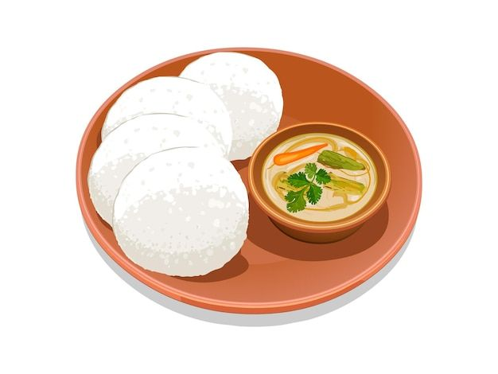
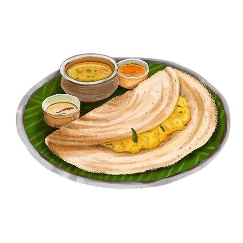
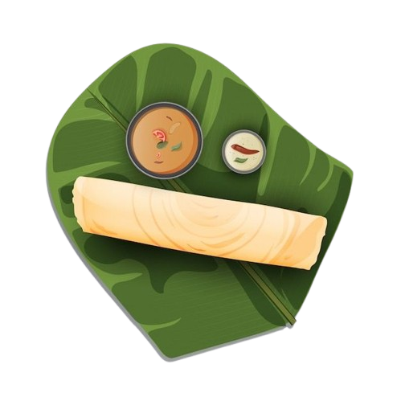
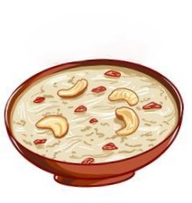

Breakfast

- Idli - ₹80
Soft steamed rice cakes with coconut chutney.
- Ven Pongal - ₹100
Rice and moong dal dish flavored with black pepper and cumin.
- Vegetable Upma - ₹90
Savory semolina with vegetables, lightly spiced.
Appetizers
- Medu Vada - ₹70
Crispy lentil fritters served with chutney.
- Banana Bonda - ₹60
Sweet banana fritters.
- Kara Paniyaram - ₹80
Savory rice and lentil dumplings, crispy on the outside.
Lunch

- Coconut Rice - ₹120
Fragrant rice cooked with grated coconut and spices.
- Avial - ₹150
Mixed vegetable stew with coconut, mild and creamy.
- Sambar - ₹100
Hearty lentil stew with vegetables.
Thali

- Satvic Special Thali - ₹300
Rice, chapati, sambar, rasam, vegetable curry, avial, and payasam for dessert.
- Mini Thali - ₹180
Rice, sambar, rasam, a vegetable side, and coconut chutney.
- Tiffin Thali - ₹220
Idli, dosa, pongal, and coconut chutney.
Dinner

- Venthaya Dosai - ₹130
Fenugreek-infused dosa, crispy and healthy.
- Vegetable Kootu - ₹140
Mild, spiced lentil and vegetable curry.
- Lemon Rice - ₹110
Rice flavored with lemon and curry leaves.
Desserts

- Kesari - ₹90
Semolina pudding flavored with saffron and cardamom.
- Payasam - ₹100
Sweet milk-based dessert with rice or vermicelli.
- Coconut Laddu - ₹80
Sweet coconut balls with jaggery.